무선설비산업기사 (2014-05-31 기출문제)
1과목: 디지털 전자회로
1. 다음 중 전원 정류회로의 리플 함유율을 적게 하는 방법으로 틀린 것은?
- 출력측 평활형 콘덴서의 정전용량을 작게 한다.
- 평활형 초크 코일의 인덕턴스를 크게 한다.
- 입력측 평활용 콘덴서의 정전용량을 크게 한다.
- 교류입력전원의 주파수를 높게 한다.
(정답률: 85%)

2. 다음 중 다이오드를 사용한 정류회로에 대한 설명으로 틀린 것은?
- 평활형 초크 코일의 삽입장소에 따라 험(Hum)을 작게 할 수 있다.
- 다이오드 내부저항이 클수록 전압변동률이 나빠진다.
- 3상 반파정류회로의 경우 출력측에 전원주파수의 3배 주파수가 나타난다.
- 부하 임피던스가 낮을수록 리플함유율이 작아진다.
(정답률: 66%)
3. 전원공급기를 처음 켰을 때 발생할 수 있는 서지전류로 인하여 발생되는 손상은 어떤 방법으로 막는 것이 바람직한가?
- 여러 개의 다이오드를 병렬로 연결하고 이들 각 다이오드와 직렬로 낮은 값의 저항을 연결한다.
- 여러 개의 다이오드를 직렬로 연결한다.
- 여러 개의 다이오드를 직렬로 연결하고 마지막 다이오드에 낮은 값의 캐패시터를 연결한다.
- 변압기의 1차측에 퓨즈를 직렬로 연결한다.
(정답률: 76%)
4. 다음 그림의 회로는 두 개의 비반전 증폭기를 종속 접속한 것이다. 저항 10[kΩ]에 흐르는 전류 Io는 몇 [μA]인가? (단, 각 연산 증폭기는 이상적이다.)
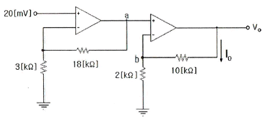
- 25[μA]
- 50[μA]
- 70[μA]
- 120[μA]
(정답률: 60%)
5. 이미터접지 트랜지스터 증폭기회로에서 입력신호와 출력신호의 전압 위상차는 얼마인가?
- 0°의 위상차가 있다.
- 180°의 위상차가 있다.
- 90°의 위상차가 있다.
- 270°의 위상차가 있다.
(정답률: 90%)
6. 0.1[V]의 교류 입력이 10[V]로 증폭되었을 때 증폭도는 몇 [dB]인가?
- 10[dB]
- 20[dB]
- 30[dB]
- 40[dB]
(정답률: 65%)
7. 수정발진기에서 발진자가 어떤 임피던스 상태일 때 안정된 발진상태를 나타내는가?
- 용량성
- 유도성
- 저항성
- 어떤 상태든지 상관없다.
(정답률: 84%)
8. 수정 발진회로에서 수정 진동자의 전기적 직렬 공진 주파수를 fs , 병렬 공진 주파수를 fp 라 할때, 가장 안정된 발진을 하기 위한 조건은? (단, fa는 발진 주파수이다.)
- fp ＜ fa ＜ fs
- fa = fs
- fs ＜ fa ＜ fp
- fa = fp
(정답률: 94%)
9. 다음 중 발진주파수의 변동원인과 관계없는 것은?
- 전원 전압의 변동
- 부하의 변동
- 건전지 충전의 변화
- 주위 온도의 변화
(정답률: 74%)
10. 다음 중 PCM에 관한 일반적인 설명으로 틀린 것은?
- S/N비가 좋다.
- 넓은 주파수 대역을 차지한다.
- 신호파를 표본화(Sampling)한다.
- 잡음에 대해서 극히 약한 방식이다.
(정답률: 77%)
11. PCM에서 미약한 신호는 진폭을 크게 하고 진폭이 큰 신호는 진폭을 줄이는 기능을 무엇이라 하는가?
- 프리엠퍼시스(Pre-emphasis)
- 압신(Companding)
- 디엠퍼시스(De-emphasis)
- FM 복조시의 리미팅(Limiting)
(정답률: 87%)
12. 클리핑(Clipping) 회로에서 입력이 Vi= 6sin(200t)[V]인 경우 출력 전압 Vo의 최고치 전압은?
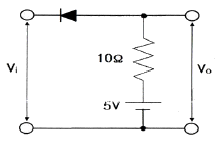
- 2[V]
- 3[V]
- 4[V]
- 5[V]
(정답률: 73%)
13. 다음 중 슈미트 트리거 회로의 응용으로 적합하지 않은 것은?
- 톱니파 발생회로
- 구형파 발생회로
- A-D 변환회로
- 전압비교 회로
(정답률: 72%)
14. 다음과 같은 논리 함수를 구현할 때 최소의 게이트를 사용할 수 있도록 단순화시킨 것으로 맞는 것은?
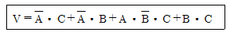
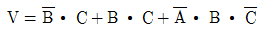
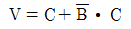
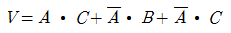
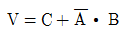
(정답률: 70%)
15. 다음과 같은 파형을 클록(Cp)형 T 플립플롭에 가하였을 때, 출력 파형으로 맞는 것은? (단, T 플립플롭은 상승 엣지(Edge)에서 동작하고 클록이 입력되기 전의 T 플립플롭의 출력은 0이다.)
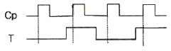
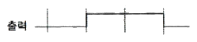
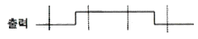
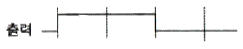
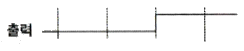
(정답률: 74%)
16. 레지스터 A에 1011101, 레지스터 B에 1101100이 저장되어 있다. 두 수의 EX-OR 연산 결과는?
- 0110001
- 1001100
- 1001110
- 1111101
(정답률: 76%)
17. 다음 그림과 같은 논리 회로는 어떤 기능을 수행하는가?
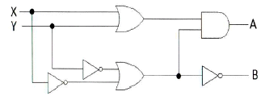
- 일치 회로
- 반가산기
- 전가산기
- 반감산기
(정답률: 87%)
18. 다음 중 비동기식 카운터의 플립플롭 구성에 대한 설명으로 틀린 것은?
- 플립플롭 2개를 사용하여 16진 카운터 계수를 나타낸다.
- T 플립플롭으로 구성한다.
- J-K 플립플롭으로 구성할 때 입력 J=K=1로 한다.
- T 플립플롭으로 구성할 때 입력 T=1로 하여 Toggle 상태로 한다.
(정답률: 68%)
19. 다음 중 비교회로(Comparator)에 대한 설명으로 틀린 것은?
- 2개의 입력을 비교하여 비교한 결과를 출력에 나타내는 회로이다.
- 출력의 종류는 3가지이다.
- 2개의 입력이 같은 값일 때 출력은 배타적 NOR(XNOR)로 표시된다.
- 2개의 입력이 다른 값일 때 출력은 배타적 OR(XOR)로 표시된다.
(정답률: 66%)
20. 다음 중 기억상태를 읽는 동작만 할 수 있는 메모리는?
- ROM
- Address
- RAM
- Register
(정답률: 76%)
2과목: 무선통신 기기
21. 다음 중 FM 송신기에 사용되는 Pre-Emphasis 회로에 대한 설명으로 맞는 것은?
- S/N비를 향상시키는 효과가 있다.
- 전력 증폭의 효율을 높이기 위하여 사용한다.
- 선택도가 개선된다.
- 적분회로로 구성한다.
(정답률: 79%)
22. 디지털 신호의 펄스열을 그대로 또는 다른 형식의 펄스 파형으로 변환시켜 전송하는 방식은?
- 베이스밴드 전송방식
- 광대역 전송방식
- 협대역 전송방식
- 반송대역 전송방식
(정답률: 89%)
23. 전파를 이용하여 항공기나 선박의 위치에 관한 정보를 얻어서 항로를 결정하고 목적지에 안전하게 도달하는 방법을 무엇이라 하는가?
- 전파 항법
- 전파 측정법
- 전파 반사법
- 전파 추미법
(정답률: 83%)
24. 다음 그림과 같은 신호 공간 다이어그램을 나타내는 변조 방식은 어느 것인가?
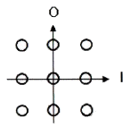
- ASK
- BPSK
- FSK
- QAM
(정답률: 83%)
25. 다음 중 레이저의 탐지거리 결정 요인에 대한 설명으로 틀린 것은?
- 안테나의 높이가 높을수록 멀리 탐지된다.
- 유효 반사면적이 큰 목표일수록 멀리 탐지된다.
- 출력 및 수신 감도를 올리면 탐지거리가 증대된다.
- 안테나의 이득은 작게 하고, 파장을 길게 사용하면 멀리 탐지된다.
(정답률: 75%)
26. 다음 중 이동통신사업자들이 시스템 용량 증대를 위하여 사용하는 기법에 해당되지 않는 것은?
- 중계기 사용
- 셀 분리(Cell Splitting)
- 섹터링(Sectoring)
- 마이크로셀 존(Micro-Cell Zone)
(정답률: 61%)
27. 다음 중 이동통신시스템의 송신기 상호변조 특성을 감소하는 방법이 아닌 것은?
- 상호 간의 결합 감쇄량을 크게 정한다.
- 상호 간의 반사특성을 증폭시킨다.
- 동일 건물 내에서 송신기 군의 주파수 간격을 넓게 정한다.
- 아이솔레이터 등을 삽입하여 혼입 장애파의 레벨을 저하시킨다.
(정답률: 38%)
28. 마이크로웨이브 통신에서 송신기의 출력이 37[dBm], 도파관(W/G)의 손실이 3[dB]일 때, 안테나 입력단에 인가되는 전력은 약 얼마인가?
- 1.5[W]
- 2.5[W]
- 5[W]
- 10[W]
(정답률: 71%)
29. 기지국, 유선인터넷망, Gateway 및 O&M Server로 구성되며 Core 네트워크와의 연계를 통해 LTE 전화 및 무선데이터 통신을 제공하는 서비스 기술은?
- 펨토셀
- Wi-Fi
- WiMax
- GPS
(정답률: 86%)
30. 가장 적은 수의 정지위성으로 양 극지방을 제외한 전 세계를 커버(Cover)하는 통신망을 구성할 수 있는 배치 방법은?
- 5개의 위성을 72도의 간격으로 배치한다.
- 4개의 위성을 90도의 간격으로 배치한다.
- 3개의 위성을 120도의 간격으로 배치한다.
- 2개의 위성을 180도의 간격으로 배치한다.
(정답률: 89%)
31. 교류전압의 불규칙한 전압변동을 자동적으로 조정하여 일정한 전압을 부하에 공급하게 하는 장치로서 부하속도 등의 변동에 의한 발전기 단자 전압의 변동을 자동적으로 보상하는 장치는?
- UPS
- AVR
- AGC
- Inverter
(정답률: 66%)
32. 다음 중 태양전지에 대한 설명으로 틀린 것은?
- 태양전지의 기판 종류에는 단결정 실리콘 웨이퍼가 있다.
- 태양전지는 태양광을 광전효과를 이용하여 전기를 생산한다.
- 태양전지의 양단에 외부도선을 연결하면 P형 쪽의 전자가 도선을 통해 N형 쪽으로 이동하게 되면서 전류가 흐르게 된다.
- 태양전지 에너지원은 청정, 무제한이다.
(정답률: 89%)
33. 수신기에서 Noise blanker의 기능은 어떤 경우에 사용하는가?
- 수신기의 펄스성 잡음을 제거하기 위하여 사용한다.
- 수신기의 중간주파변환부의 필터를 동작시키기 위하여 사용한다.
- 수신주파수를 미세하게 변화시키기 위하여 사용한다.
- 수신기의 음성출력을 가감하기 위하여 사용한다.
(정답률: 80%)
34. 전원회로에서 부하가 있을 때 단자전압이 110[V], 부하가 없을 때 단자전압이 120[V]라면 이때의 전압 변동률은 약 얼마인가?
- 10.1[%]
- 9.1[%]
- 8.1[%]
- 7.1[%]
(정답률: 86%)
35. 다음 그림과 같은 충전방식의 특징에 대한 설명으로 틀린 것은?
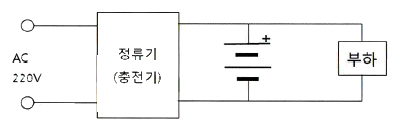
- 축전지의 용량은 비교적 작아도 된다.
- 정류기에서 발생한 맥동을 축전지가 흡수하여 맥동률이 낮아진다.
- 부하에 대한 전압변동이 적고 DC 출력전압이 안정적이다.
- 보수가 어렵고 축전지의 수명이 짧다.
(정답률: 77%)
36. 수신기에서 이득이 20[dB]이고 잡음지수가 1.8[dB]인 증폭기 후단에 이득이 10[dB]이고 잡음지수 2.4[dB]인 증폭기가 있을 경우 이 수신기의 종합잡음지수는 얼마인가?
- 1.30[dB]
- 1.34[dB]
- 1.87[dB]
- 2.35[dB]
(정답률: 68%)
37. 다음 중 AM 수신기의 근접 주파수 선택도를 측정할 경우 필요하지 않은 장비는?
- 레벨메터
- 의사 공중선
- Q 미터
- 표준신호발생기
(정답률: 60%)
38. 다음 중 안테나 특성 측정항목이 아닌 것은?
- 고유파장
- 접지저항
- 실효용량
- 군속도
(정답률: 82%)
39. 다음 회로의 출력파형으로 맞는 것은? (단, Vi= Vm sin(ωt)) (문제 오류로 실제 시험에서는 모두 정답처리 되었습니다. 여기서는 1번을 누르면 정답 처리 됩니다.)
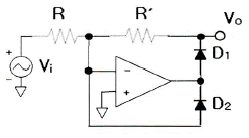
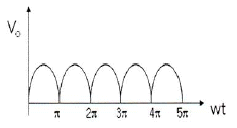
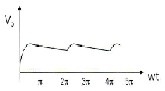
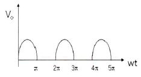
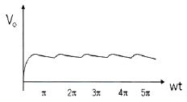
(정답률: 77%)
40. 전송로의 진폭왜곡이나 위상왜곡에 의해 발생하는 부호 간 간섭의 영향을 감소시킴으로써 주파수 특성 변형을 고르게 보정해 주는 것은?
- 등화기
- 대역 여파기
- 진폭 제한기
- 정합필터
(정답률: 83%)
3과목: 안테나 개론
41. 전자파가 자유공간을 진행할 때 단위시간당 단위면적을 통과하는 에너지를 나타낸 것은?
- 포인팅 전력
- 파동방정식
- 맥스웰방정식
- 암페어법칙
(정답률: 79%)
42. 손실을 갖는 매질 내를 전파하는 평면파의 감쇠정수에 대한 설명으로 맞는 것은?
- 감쇠정수는 표피두께에 반비례한다.
- 감쇠정수는 주파수에 무관하다.
- 감쇠정수는 도체의 고유 도전율에 반비례한다.
- 감쇠정수의 크기와 위상정수 사이에는 상호 역의 관계를 갖는다.
(정답률: 72%)
43. 전계강도가 3.0[mV/m]인 자유 공간의 단위 면적당 단위 시간에 통과하는 전자파 에너지는 약 얼마인가?
- 15.14×10-2[μV]
- 3.77×10-2[μV]
- 2.39×10-2[μV]
- 1.44×10-2[μV]
(정답률: 57%)
44. 다음 중 도파관의 임피던스 정합 방법이 아닌 것은?
- 도파관 창에 의한 정합
- 무반사 종단기에 의한 정합
- 도체봉에 의한 정합
- 방향성 결합기에 의한 정합
(정답률: 66%)
45. 다음 중 평형ㆍ불평형 변환회로(Balun)에 대한 설명으로 틀린 것은?
- 평형전류만 흐르게 하며 초단파대 이상의 정합회로로 사용된다.
- 스페르토프형 Balun의 경우 단일 주파수용으로 쓰인다.
- L, C 소자를 사용하는 것을 분포 정수형 Balun이라 한다.
- 집중 정수형 Balun으로 위상 반전형과 전자 결합형이 있다.
(정답률: 85%)
46. 선로1과 선로2의 결합부분에서 반사계수가 0.7일 경우 결합부분의 손실을 [dB]로 표현하면 약 얼마인가?
- 0.3[dB]
- 1.5[dB]
- 3[dB]
- 6[dB]
(정답률: 69%)
47. 다음 중 동축 케이블에 대한 설명으로 틀린 것은?
- 특성 임피던스 Zo는
 에 반비례한다.
에 반비례한다. - 평행 2선식 급전선에 비해 특성 임피던스가 큰이유는 케이블 내부의 정전용량이 크기 때문이다.
- 외부로부터 유도방해가 거의 없다.
- 평행 2선식 급전선보다 선간 전압이 낮다.
(정답률: 64%)
48. 다음 중 급전선에 대한 설명으로 틀린 것은?
- 특성 임피던스는 사용주파수와 무관하다.
- 급전선의 길이가 길면 특성임피던스는 증가한다.
- 급전선의 특성 임피던스는 도체의 직경과 관계가 있다.
- 급전선에서의 손실은 √f에 비례하여 커진다.
(정답률: 47%)
49. 기준 공중선으로 등방성 공중선을 사용하여 임의의 공중선의 이득을 측정했을 때의 이득을 무엇이라고 하는가?
- 절대 이득
- 상대 이득
- 지상 이득
- 표준 이득
(정답률: 77%)
50. 다음 중 선형공중선에 대한 설명으로 틀린 것은?
- 직렬공진하는 파장 중 가장 긴 파장을 고유파장이라 한다.
- 최저의 공진주파수를 고유주파수라 한다.
- 접지점에서 전류는 최소이고 전압은 최대이다.
- 개방점(선단)에서 전류는 0(zero)이고 전압은 최대이다.
(정답률: 50%)
51. 다음 중 슬롯 안테나의 대역폭을 넓게 하는 방법으로 맞는 것은?
- 슬롯의 폭을 넓게 한다.
- 슬롯의 폭을 좁게 한다.
- 슬롯을 여러 개 배열한다.
- 슬롯에 저항을 설치한다.
(정답률: 80%)
52. 안테나 접지방식 중 방사상 접지에 대한 설명을 틀린 것은?
- 대규모 방송국에 사용된다.
- 지하 0.3[m]~1[m] 정도에 설치된다.
- 중파 방송용 안테나에 사용된다.
- 접지저항은 5[Ω] 정도이다.
(정답률: 69%)
53. λ/4 수직 접지 공중선의 전력이 1[KW]에서 9[KW]로 증가한 경우, 동일한 위치에서 전계강도는 몇 배로 증가하는가?
- 9배
- 6배
- 3배
- √3배
(정답률: 78%)
54. 임의의 송수신 지점간 무선통신에서 전송거리가 1[km]에서 10[km]로 증가시 자유공간의 전송손실 특성으로 맞는 것은?
- 손실이 6[dB] 증가한다.
- 손실이 10[dB] 증가한다.
- 손실이 20[dB] 증가한다.
- 손실이 40[dB] 증가한다.
(정답률: 69%)
55. 다음 중 회절 현상에 대한 설명으로 틀린 것은?
- 극초단파에서도 일어난다.
- 쐐기형 장애물(Knife edge)이 있으면 잘 일어난다.
- 회절파에 의한 전계강도는 직접파에 의한 전계강도보다 더 크다.
- 주파수가 낮을수록 잘 일어난다.
(정답률: 52%)
56. 전리층에서 복사전력이 강한 쪽의 전파가 복사전력이 약한 쪽의 전파를 변조시켜 복사전력이 약한 쪽의 전파를 수신하면 복사전력이 강한 쪽의 전파가 혼입되어 들어오는 현상은?
- 델린저 현상
- 룩셈부르크 현상
- 대척점 효과
- 소실 현상
(정답률: 72%)
57. 다음 중 공전잡음을 경감시키는 방법이 아닌 것은?
- 수신기의 대역폭을 넓게 하여 선택도를 높인다.
- 송신 출력을 증대시켜 수신점의 S/N비를 크게 한다.
- 수신기에 억제회로를 부착한다.
- 지향성 안테나를 사용한다.
(정답률: 69%)
58. 다음 중 발생원인에 따른 라디오 덕트(Radio Duct)가 아닌 것은?
- 주간 냉각에 의한 라디오 덕트
- 전선에 의한 라디오 덕트
- 이류에 의한 라디오 덕트
- 침강에 의한 라디오 덕트
(정답률: 88%)
59. 다음 중 단파가 멀리까지 도달하는 이유로 맞는 것은?
- 감쇠가 작기 때문에
- 지표파를 이용하기 때문에
- 전리층 반사파를 이용하기 때문에
- 굴절되어 전파되기 때문에
(정답률: 74%)
60. 다음 중 전파투시도(지형단면도)에 대한 설명으로 틀린 것은?
- 전파통로상에서 수평방향의 장애물을 살펴볼 때 편리하다.
- 전파통로를 나타내는 지구 단면도로 Profile Map이라고도 한다.
- 등가지구 반경계수 K를 고려하여 작성해야 한다.
- 전파통로를 직선으로 최급할 수 있게 된다.
(정답률: 73%)
4과목: 전자계산기 일반 및 무선설비기준
61. 컴퓨터 운영체제에서 커널의 코드를 실행하기 위해 커널의 특정 루틴을 호출하는 것을 무엇이라 하는가?
- 생성상태(Created State)
- 스케줄(Schedule)
- 관리자호출(Supervisor Call)
- 대기상태(Wake Up)
(정답률: 83%)
62. 다음 보기는 운영체제의 어떤 자원관리기능에 대한 설명인가?
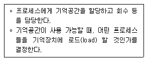
- 디스크 관리 기능
- 입출력 장치 관리 기능
- 프로세스 관리 기능
- 기억장치 관리 기능
(정답률: 80%)
63. 다음 중 컴파일러와 인터프리터에 대한 비교 설명으로 틀린 것은?
- 컴파일러는 목적 프로그램을 생성하고, 인터프리터는 생성하지 않는다.
- 컴파일러는 전체 프로그램을 한꺼번에 처리하고, 인터프리터는 대화식인 행 단위로 처리한다.
- 컴파일러는 실행속도가 느리고, 인터프리터는 빠르다.
- 인터프리터는 BASIC, LISP 등이 있고, 컴파일러는 COBOL, C, C# 등이 있다.
(정답률: 84%)
64. 다음 중 마이크로프로세서 내부구조에 대한 설명으로 옳은 것은?
- 프로그램 카운터 : 프로그램메모리의 어느 위치에 있는 명령어를 수행할 것인가를 나타낸다.
- 명령어 레지스터 : 프로그램 카운터의 값을 변경한다.
- 해독장치 : 명령어를 지정한다.
- 타이밍 발생기 : 다음 명령어의 위치를 가리킨다.
(정답률: 84%)
65. 데이터의 일부분이나 전체를 지우고자 할 때 사용되는 연산은?
- OR
- AND
- MOVE
- Complement
(정답률: 74%)
66. 컴퓨터 언어에서 미리 정의한 자료의 형태를 기본 자료형이라 하는데 그 종류에 포함되지 않는 것은?
- 배열형
- 문자형
- 정수형
- 실수형
(정답률: 79%)
67. 다음 중 인터럽트의 발생원인이 아닌 것은?
- 전원 이상
- 오퍼레이터 조작 또는 타이머
- 서브 프로그램 호출
- 제어감시(SVC)
(정답률: 73%)
68. 마이크로컴퓨터의 명령어수가 126개라면 OP Code는 몇 비트인가?
- 5비트
- 6비트
- 7비트
- 8비트
(정답률: 81%)
69. 컴퓨터의 연산장치에서 산술ㆍ논리 연산 결과를 일시적으로 보관하는 장치는?
- 누산기(Accumulator)
- 데이터 레지스터(Data Register)
- 감산기(Substracter)
- 상태 레지스터(Status Register)
(정답률: 79%)
70. 주기억장치의 용량이 512[kbyte]인 컴퓨터에서 32비트의 가상주소를 사용하고, 페이지의 크기가 4[kbyte]면 주기억장치의 페이지 수는 몇 개인가?
- 32
- 64
- 128
- 512
(정답률: 83%)
71. 다음 중 주파수 분배시 미래창조과학부장관이 고려하여야 할 사항이 아닌 것은?
- 주파수의 이용현황 등 국내의 주파수 이용여건
- 전파를 이용하는 서비스의 대한 수요
- 국제적인 주파수 사용동향
- 혼신ㆍ혼선 등 주파수의 조사ㆍ분석
(정답률: 47%)
72. 무선설비규칙에서 규정한 변조특성의 경우 변조신호에 따라 반송파가 진폭변조되는 송신장치는 변조도가 몇 퍼센트를 초과하지 말아야 하는가?
- 80[%]
- 85[%]
- 90[%]
- 100[%]
(정답률: 83%)
73. 다음 중 방송통신기자재 시험기관 지정시 서류심사 사항으로 틀린 것은?
- 구비서류의 적정성
- 조직 및 인력의 적정성
- 시험설비 및 시험환경의 적정성
- 시험원의 시험 수행능력
(정답률: 65%)
74. 송신설비의 공중선ㆍ급전선 등 고압전기를 통하는 장치는 사람이 보행하거나 기거하는 평면으로부터 얼마 이상의 높이에 설치되어야 하는가?
- 1.5미터
- 2.5미터
- 3.5미터
- 4.5미터
(정답률: 90%)
75. 다음 중 기술기준 적합성 평가시험 전 확인사항으로 틀린 것은?
- 사용 전류
- 사용 주파수
- 전파 형식
- 점유주파수대폭
(정답률: 80%)
76. 다음 중 국립전파연구원장이 통신기기인증서를 신청인에게 교부 후 관보에 고시할 내용으로 틀린 것은?
- 인증번호
- 인증 받은 자의 상호 또는 성명
- 기기의 명칭ㆍ모델명
- 유효기간
(정답률: 72%)
77. 다음 중 전파환경측정의 종류에 해당되지 않는 것은?
- 전파환경의 조사
- 전파응용설비의 측정
- 전자파차폐성능 측정
- 전자파흡수율 측정
(정답률: 61%)
78. 다음 중 전파사용료 부과를 전부 면제할 수 있는 대상에 해당하지 않는 무선국은?
- 전기통신역무를 제공하기 위한 무선국
- 국가가 개설한 무선국
- 지방자치단체가 개설한 무선국
- 방송국 중 영리를 목적으로 하지 아니하는 방송국
(정답률: 62%)
79. 다음 문장의 괄호 안에 들어갈 용어로 적합한 것은?
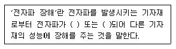
- 방사, 간섭
- 방사, 흡수
- 흡수, 전도
- 방사, 전도
(정답률: 68%)
80. 무선설비 공사가 품질확보 상 미흡 또는 중대한 위해를 발생시킬 수 있다고 판단될 때 공사중지를 지시할 수 있으며, 공사중지에는 부분중지와 전면중지로 구분되는데 다음 중 부분중지에 해당되는 경우는?
- 재시공 지시가 이행되지 않는 상태에서는 다음 단계의 공정이 진행됨으로써 하자발생이 될 수 있다고 판단될 경우
- 시공자가 고의로 정보통신시설 설비 및 구축공사의 추진을 심히 지연시킬 경우
- 정보통신공사의 부실 발생우려가 농후한 상황에서 적절히 조치를 취하지 않은 채 공사를 계속 진행할 경우
- 천재지변 등 부가항력적인 사태가 발생하여 공사를 계속할 수 없다고 판단될 경우
(정답률: 86%)